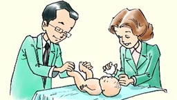

¿Cuáles son las características generales de los recién nacidos?
|  |
| Isftic. Uso educativo-nc. Procedencia. |
Son aquellas referidas a los aspectos físicos fácilmente observables, como:
-
Talla. Para hacer un seguimiento del desarrollo infantil la talla es uno de los indicadores principales.
-
Peso. Al nacer oscila entre 3.250 y 3.300 gramos, aunque existe una gran variabilidad individual dentro de los parámetros de normalidad. Durante los primeros días se produce una pérdida del 10% de peso.
-
Cabeza. El perímetro craneal es de 35 cm. en los niños y de 34,5 cm. en las niñas. La cabeza es la parte del cuerpo que antes alcanza el tamaño adulto.
-
Tronco. El perímetro torácico es de 32,5 cm. en los niños y 32 cm. en las niñas; como puede observarse, es un poco inferior que el perímetro craneal. La columna vertebral va adoptando poco a poco curvaturas inexistentes en el nacimiento y que van apareciendo en la medida que se coordinan los movimientos de sentado y de pie.
-
Extremidades. Las extremidades superiores tienen la cuarta parte de la longitud que alcanzarán en la edad adulta y las extremidades inferiores son la quinta parte de la longitud de las del adulto.
-
Dientes. Internamente empiezan a configurarse durante el cuarto mes del embarazo y la aparición al exterior de los dientes temporales se produce en torno a los 6-9 meses, aunque hay muchos casos de mayor precocidad o tardanza.
-
Huesos. Surgen en el período fetal por procesos de mineralización y endurecimiento del tejido cartilaginoso.
-
Músculos. La masa muscular ocupa la quinta parte del peso total del cuerpo, que se va incrementando hasta la edad adulta en la que alcanza las dos quintas partes.
-
Piel, pelo y uñas. Al nacer, el niño o niña están recubiertos por la vérnix o capa sebácea de color blanquecino, que les sirve de protección antes de nacer para conservar la piel tersa y suave, y que va desapareciendo a las pocas horas, reabsorbiéndose.